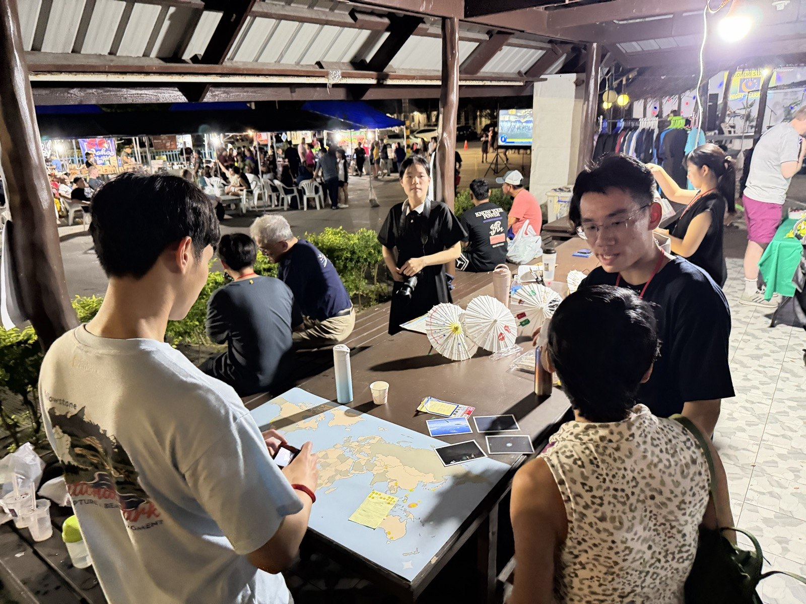
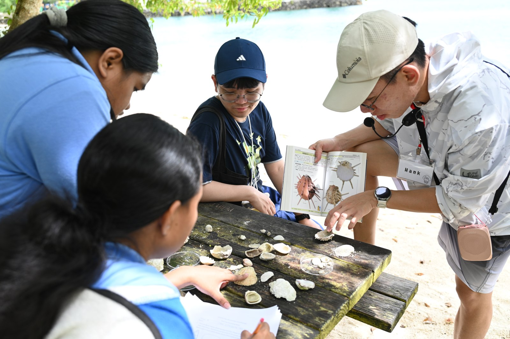
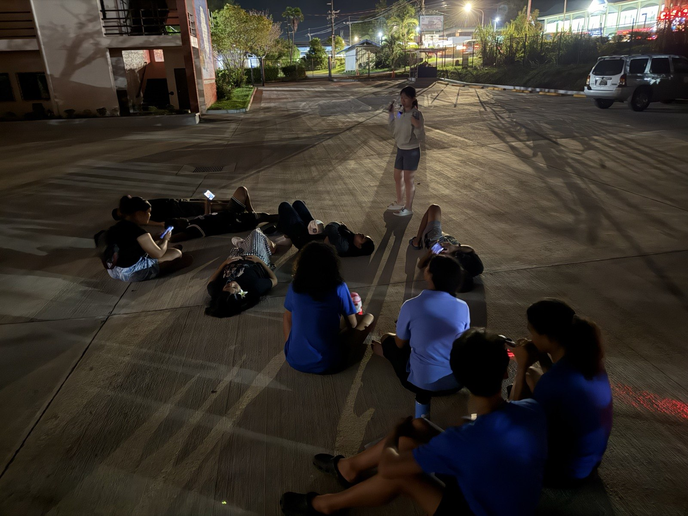
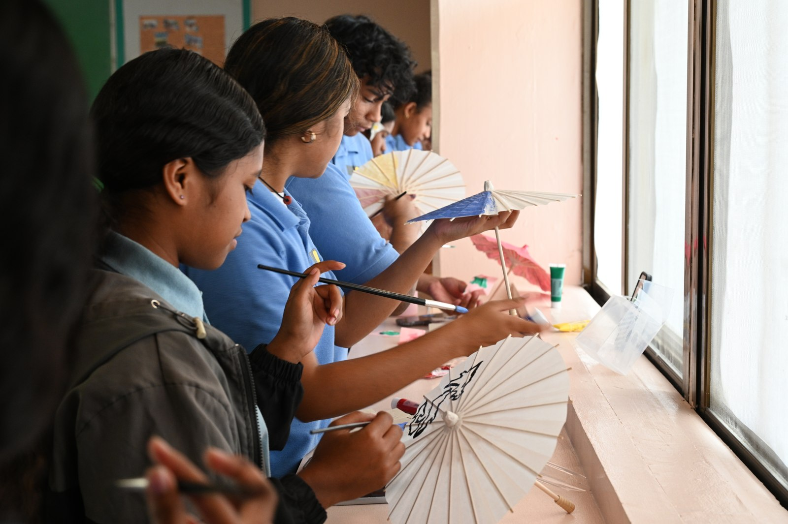

天文Astronomy
透過星空導覽與望遠鏡活動認識夜空。帛琉位於低緯度，能接觸到臺灣較難觀測的部分南方天體。Sky tours and telescope activities opened up the night sky. Palau’s low latitude also gave the team access to some southern celestial objects that are harder to observe from Taiwan.
2026 / 帛琉2026 / Palau
基礎科學、天文與環境教育交流An exchange in foundational science, astronomy and environmental education
帛琉計畫歷經一年多準備，承接金門交流的實地經驗，並與 Palau High School 及科羅州社區共同完成。活動把天文、基礎科學和環境教育帶進校園與社區，也讓團隊從不同的地方學習。Prepared over more than a year and shaped by the team’s field experience in Kinmen, the Palau project was carried out with Palau High School and communities in Koror. Activities brought astronomy, foundational science and environmental learning into schools and community spaces, while giving the team a chance to learn from a new place.
透過星空導覽與望遠鏡活動認識夜空。帛琉位於低緯度，能接觸到臺灣較難觀測的部分南方天體。Sky tours and telescope activities opened up the night sky. Palau’s low latitude also gave the team access to some southern celestial objects that are harder to observe from Taiwan.
以大氣科學概念搭配 Arduino 感測器實作，練習用工具觀察周遭環境。Atmospheric science concepts met hands-on Arduino sensor activities, using simple tools to investigate the surrounding environment.
從在地環境出發觀察生態，連結科學探索與日常生活中的自然。Ecology activities began with the local environment, connecting scientific exploration with the nature of everyday life.
透過彼此分享生活經驗與地方故事，讓臺灣與帛琉的學生在交流中認識彼此。Students from Taiwan and Palau shared everyday experiences and local stories, learning about one another through conversation.
「留下一個故事，帶走一片星空。」“Leave a story, take home a sky full of stars.”
150+位當地居民、學生與國際訪客參與帛琉社區的星空故事館活動。local residents, students and international visitors joined the community Starry Story House activities in Palau.





不同的教育與文化背景，沒有阻止大家一起提問和嘗試。當我們共同觀察、動手實作，科學便成為彼此交流的起點。Different educational and cultural backgrounds did not keep people from asking questions and trying things together. Through shared observation and hands-on learning, science became a starting point for conversation.
← 回到活動紀錄← Back to Our Journey帛琉計畫總召Palau project lead
臺大物理系三年級NTU Physics · Year 3
臺大天文社幹部NTU Astronomy Club officer
帛琉計畫總召Palau project lead
臺大物理系三年級NTU Physics · Year 3
臺大天文社幹部NTU Astronomy Club officer
星野發起人、星空故事館負責人Hoshiko founder · Starry Story House lead
臺大物理系三年級NTU Physics · Year 3
臺大天文社社長NTU Astronomy Club president
教案負責人Curriculum lead
清大物理系三年級NTHU Physics · Year 3
清大天文社幹部NTHU Astronomy Club officer
教案負責人Curriculum lead
清大工科系三年級NTHU Engineering and System Science · Year 3
清大天文社幹部NTHU Astronomy Club officer
教案負責人Curriculum lead
臺大生科系三年級NTU Life Science · Year 3
曾參與野一片夢之海（NGO）Previously participated in 野一片夢之海 (NGO)
教案負責人Curriculum lead
臺大物理系三年級NTU Physics · Year 3
臺大天文社幹部NTU Astronomy Club officer
教案負責人Curriculum lead
臺大大氣系三年級NTU Atmospheric Sciences · Year 3
臺大天文社副社長NTU Astronomy Club vice president
教案負責人Curriculum lead
臺大機械系三年級NTU Mechanical Engineering · Year 3
臺大天文社幹部NTU Astronomy Club officer
臺大森林系副教授 · 帶隊老師Associate Professor, NTU School of Forestry and Resource Conservation · Faculty advisor